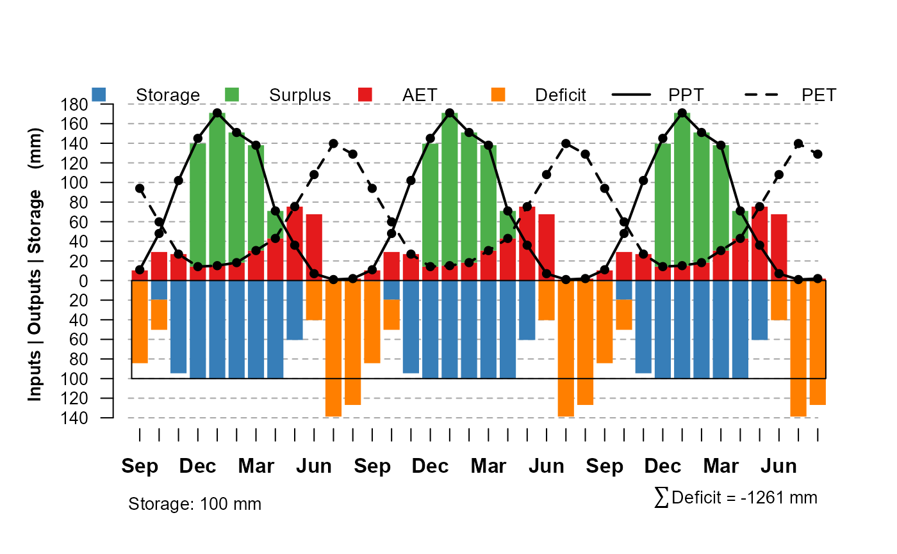
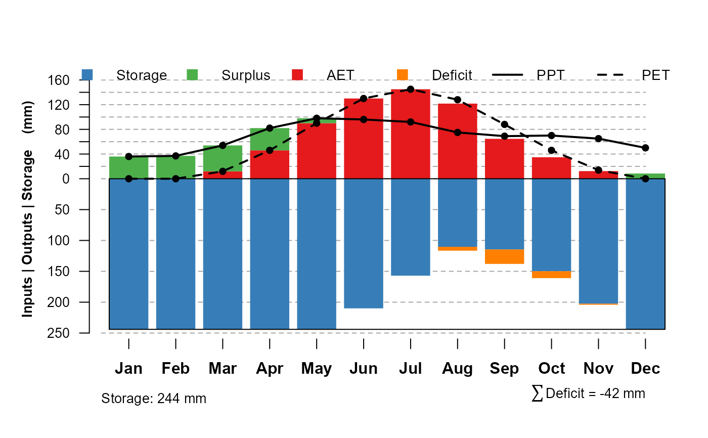

This function offers one possible visualization for the results of monthlyWB.
plotWB( WB, AWC, showAWC = "below", sw.col = "#377EB8", surplus.col = "#4DAF4A", et.col = "#E41A1C", deficit.col = "#FF7F00", pch = c("P", "E"), pt.cex = 0.85, lwd = 2, n.ticks = 8, grid.col = grey(0.65), month.cex = 1 )
| WB | output from |
|---|---|
| AWC | available water-holding capacity (mm) |
| showAWC | styling to show box for AWC below (default) or above zero point of axis |
| sw.col | color for soil water |
| surplus.col | color for surplus water |
| et.col | color for ET |
| deficit.col | color for deficit |
| pch | plotting character for PPT and PET points ( |
| pt.cex | character expansion factor for PPT and PET points |
| lwd | line width for PPT and PET curves |
| n.ticks | approximate number of tick marks on positive and negative y-axis |
| grid.col | horizontal grid line color |
| month.cex | character expansion factor for month labels (x-axis) |
You may have to adjust figure margins and size to get all of the elements to "look right".
D.E. Beaudette and J.M. Skovlin
if(requireNamespace('hydromad')) { ## 100mm (4") AWC # monthly PPT and PET extracted from monthly estimates at Sonora, CA AWC <- 100 PPT <- c(171, 151, 138, 71, 36, 7, 1, 2, 11, 48, 102, 145) PET <- c(15.17, 18.26, 30.57, 42.95, 75.37, 108.05, 139.74, 128.9, 93.99, 59.84, 26.95, 14.2) # water-year # three years x.wb <- monthlyWB(AWC, PPT, PET, S_init = 0, starting_month = 9, rep = 3) x.wb[x.wb$mo == 'Sep', ] # new-style representation, with AWC "above 0" plotWB(x.wb, AWC, showAWC = 'below') # old-style representation, with AWC "above 0" plotWB(x.wb, AWC, showAWC = 'above') # water year # last iteration x.wb <- monthlyWB(AWC, PPT, PET, S_init = 0, starting_month = 9, rep = 3, keep_last = TRUE ) plotWB(x.wb, AWC) }